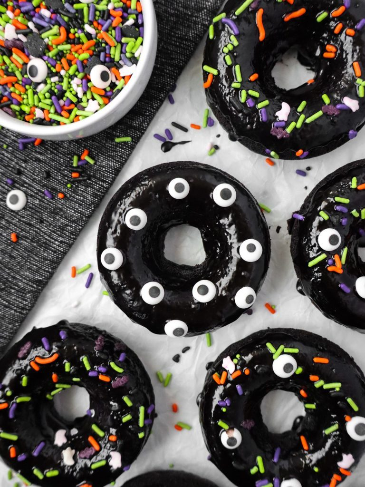

Baked Donuts

Description
Flavored with black cocoa powder, these baked Halloween donuts have a unique Oreo-like taste and are deliciously easy to make!
Ingredients
- Black Cocoa Donuts
- 1 cup all-purpose flour
- ⅓ cup black cocoa powder
- ¾ tsp baking powder
- ¼ tsp salt
- ⅛ tsp baking soda
- ½ cup buttermilk
- ¼ cup vegetable oil
- ¼ cup granulated sugar
- 2 tbsp brown sugar
- 1 egg
- ¼ tsp vanilla extract
- Black Cocoa Glaze
- 1 cup confectioners' sugar
- 2 tbsp milk
- 2 tbsp black cocoa powder
- ¼ tsp vanilla extract
Steps
- Preheat oven to 350°F and lightly grease donut pans.
- In a small bowl combine the all-purpose flour, black cocoa powder, baking powder, baking soda and salt.
- In a medium bowl whisk the buttermilk, vegetable oil, granulated sugar, brown sugar, egg and vanilla extract until well combined.
- Gently fold the dry ingredients into the wet mixture until just combined.
- Use a piping bag or a zip-top bag to pipe each donut ring ⅔ full. Do not fill to the top, the donuts will rise as they bake.
- Bake the donuts for 10 minutes. Allow to cool in donut pans for 5 minutes then unmold and finish cooling on a wire rack.
- In a small bowl whisk the confectioners' sugar, milk, black cocoa powder and vanilla extract until smooth. Immediately dip cooled donuts and top with sprinkles.
Back